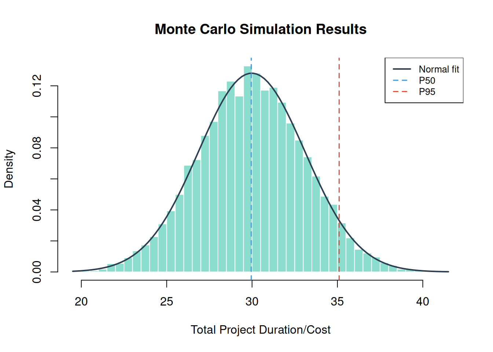

install.packages(c("ellmer", "mcptools", "jsonlite"))12 Your AI Co-Pilot: Agentic Risk Analysis
“The best way to predict the future is to invent it.” — Alan Kay
You’ve made it through eight chapters of quantitative risk analysis. You know Monte Carlo, SMM, EVM, Bayesian inference, learning curves, design structure matrices, and probabilistic networks. Now imagine not having to remember the syntax for all of them.
Imagine asking an AI assistant to “run Monte Carlo for three tasks with Normal(10,2), Triangular(5,10,15), Uniform(8,12)” and getting back a P95 date, a contingency reserve, and a tornado chart. That’s the promise of the PRA agentic layer: the core analytical functions in this book are exposed as tools that an AI agent can call directly, guided by a set of skills that tell it when and how to use each one.
12.1 How PRA Talks to AI Agents
Rather than embedding a language model inside the package, PRA takes a simpler and more portable approach: it publishes its analytical functions as tools that any capable AI agent can call. Two pieces make this work:
- An MCP server (
pra_mcp_server()) that advertises each PRA function — Monte Carlo simulation, EVM, Bayesian risk, learning curves, DSM, and the rest — as a callable tool over the Model Context Protocol. - Agent Skills — bundled
SKILL.mdfiles that document, in plain language, when to use each method, which tool to call, the argument format, and how to read the result.
The agent (Claude Code, Claude Desktop, or any MCP-compatible client) supplies the intelligence; PRA supplies the trustworthy, validated computation. Because the tools are the same functions you’ve used throughout the book, the numbers are identical whether you call mcs() yourself or ask an agent to run it.
12.2 Prerequisites
The MCP server relies on a few optional packages:
The analytical functions themselves need none of these — they are required only to serve the tools to an agent.
12.3 The MCP Server
12.3.1 Starting the server
library(PRA)
pra_mcp_server()The server communicates over stdio, the standard transport for local MCP servers, and reuses the tool definitions from pra_tools() so any update to a tool is reflected automatically.
12.3.2 Connecting from Claude Code
claude mcp add -s project pra -- Rscript -e "PRA::pra_mcp_server()"Once registered, Claude Code can call PRA tools in any conversation:
“Run a Monte Carlo simulation for three tasks: Task A normal(10, 2), Task B triangular(5, 10, 15), Task C uniform(8, 12). What is the contingency reserve at the 90th percentile?”
12.3.3 Connecting from Claude Desktop
Add the following to your Claude Desktop config file:
{
"mcpServers": {
"pra": {
"command": "Rscript",
"args": ["-e", "PRA::pra_mcp_server()"]
}
}
}12.4 Agent Skills
An agent works best when it knows not just what tools exist but when to reach for each one. PRA ships a set of Agent Skills for exactly this. Each is a SKILL.md file with structured guidance — when to use the method, which tool to call, the JSON argument format, and how to interpret the result.
Find the installed skills with:
list.files(system.file("skills", package = "PRA"))| Skill | Covers | Primary tools |
|---|---|---|
pra-overview |
Routing / entry point | (directs to the others) |
pra-monte-carlo |
Schedule/cost uncertainty | mcs_tool, smm_tool |
pra-sensitivity-contingency |
Reserves & risk drivers | contingency_tool, sensitivity_tool |
pra-earned-value |
Performance & forecasting | evm_analysis_tool |
pra-bayesian-risk |
Risk probability & cost | risk_prob_tool, risk_post_prob_tool, cost_pdf_tool, cost_post_pdf_tool |
pra-learning-curves |
S-curve fitting/forecasts | fit_and_predict_sigmoidal_tool |
pra-dsm |
Task dependency structure | parent_dsm_tool, grandparent_dsm_tool |
12.5 From Request to Tool Call
When you ask an agent to run an analysis, it selects a tool and fills in the arguments. All array and matrix arguments are passed as JSON strings. For example, the request “simulate three tasks — Normal(10,2), Triangular(5,10,15), Uniform(8,12), 10,000 runs” maps to mcs_tool with a task_dists_json of:
[{"type":"normal","mean":10,"sd":2},
{"type":"triangular","a":5,"b":10,"c":15},
{"type":"uniform","min":8,"max":12}]Under the hood, that is exactly the mcs() call you already know:
library(PRA)
set.seed(42)
task_distributions <- list(
list(type = "normal", mean = 10, sd = 2),
list(type = "triangular", a = 5, b = 10, c = 15),
list(type = "uniform", min = 8, max = 12)
)
result <- mcs(10000, task_distributions)hist(result$total_distribution,
freq = FALSE, breaks = 50,
main = "Monte Carlo Simulation Results",
xlab = "Total Project Duration/Cost",
col = "#18bc9c80", border = "white"
)
curve(dnorm(x, mean = result$total_mean, sd = result$total_sd),
add = TRUE, col = "#2c3e50", lwd = 2
)
abline(
v = quantile(result$total_distribution, c(0.50, 0.95)),
col = c("#3498db", "#e74c3c"), lty = 2, lwd = 1.5
)
legend("topright",
legend = c("Normal fit", "P50", "P95"),
col = c("#2c3e50", "#3498db", "#e74c3c"),
lty = c(1, 2, 2), lwd = c(2, 1.5, 1.5),
cex = 0.8, bg = "white"
)
mcs_tool.A typical agent workflow chains tools the same way you would chain functions: mcs_tool to simulate, then contingency_tool for the reserve and sensitivity_tool for the risk drivers. The pra-overview skill lists these common workflows so the agent knows what to do next.
12.6 Tool Reference
| Tool | Description |
|---|---|
mcs_tool |
Monte Carlo simulation with task distributions |
smm_tool |
Second Moment Method (analytical estimate) |
contingency_tool |
Contingency reserve from the last MCS |
sensitivity_tool |
Variance contribution per task |
evm_analysis_tool |
Full Earned Value Management analysis |
risk_prob_tool |
Bayesian prior risk probability |
risk_post_prob_tool |
Bayesian posterior risk after observations |
cost_pdf_tool / cost_post_pdf_tool |
Prior / posterior cost distributions |
fit_and_predict_sigmoidal_tool |
Sigmoidal learning curve fit and prediction |
parent_dsm_tool / grandparent_dsm_tool |
Design Structure Matrices |
12.7 Summary
Congratulations, you’ve completed the toolkit. You can now quantify project uncertainty (MCS, Chapter 2; SMM, Chapter 3), track project performance (EVM, Chapter 5), update risk estimates with new evidence (Bayesian, Chapter 6; Networks, Chapter 8), model structural dependencies (DSM, Chapter 9; Portfolio, Chapter 10), forecast learning (Sigmoidal, Chapter 7), and hand it all to an AI agent through MCP (Chapter 12). The rest is practice.
12.8 Exercises
Set up the server. Install
ellmer,mcptools, andjsonlite, then startpra_mcp_server()and register it with Claude Code or Claude Desktop using the instructions above. Confirm the client lists the PRA tools.Request to arguments. For the request “simulate two tasks, Normal(20,4) and Uniform(10,15), with 5,000 runs,” write out the
mcs_toolcall and itstask_dists_jsonargument by hand. Then run the equivalentmcs()in R and compare.Chaining. Ask an agent (or reason it out yourself) how to produce a P80 contingency reserve and a tornado chart for a 3-task project. Which tools are called, and in what order? Which skill documents that workflow?
EVM from a prompt. Using
evm_analysis_tool’s arguments, translate this into a tool call: BAC = $300K, schedule = [0.2, 0.4, 0.6, 0.8, 1.0], period = 4, complete = 0.55, costs = [$55K, $115K, $175K, $240K]. Then verify with the EVM functions from Chapter 5.Skill authoring. ★ Read one of the bundled
SKILL.mdfiles, then draft a short skill for a project-specific workflow of your own (for example, a standard reserve policy). What guidance would an agent need to apply it correctly?